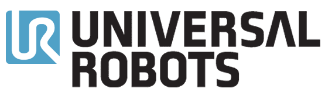

🎓 MSc in IT
Product DesignUX/UI DESIGNER
Hi! I am Octavia
I am a full-stack designer who turns complexity into clear experiences
International experience
Remote + onsite 🇩🇰 🇫🇷👩🏻💻 UX/UI design projects
since 2018NN Group
Qualified UX Designer ✅
From research to shipped UI
A snapshot of how I partner with teams: gathering feedback from users, defining problems, shaping flows and components, and polishing interfaces so products feel clear, consistent and easy to navigate.
I'm using AI as a partner but I keep the human touch in products to ensure they are not just technically sound but also fixing new problems for real users.
Services
AI-Enhanced Product Design
Pairing human judgment with AI tooling to explore concepts, tighten flows, and ship interfaces faster without losing quality or accessibility.
Coded my portfolio with AI assistance
Building a case-study portfolio in HTML with Cursor — structure, craft, and what stayed human-led.
Featured Projects
See all projectsAI-powered Design System for Nabogo ApS
Tokens, components, and Storybook documentation for a consistent product surface across teams.
Design System
Storybook
University Intranet Re-design based on UX Insights
Research-led intranet redesign for a large university—clearer structure, navigation, and interfaces shaped by staff and student needs.
Intranet
UX Research
Designing a Website and Webshop for EdTech Startup Rotoy ApS
Marketing site and webshop experience for an EdTech startup—clear storytelling, product discovery, and a purchase flow parents can trust.
EdTech
Webshop
Testimonials
Trusted by
